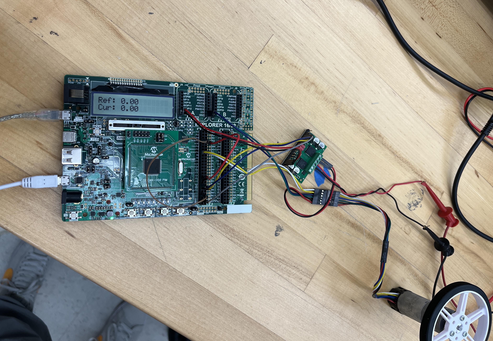

To design and program a real-time embedded system capable of receiving target angular positions from a host computer and driving a DC gearmotor to those targets using closed-loop feedback control.
Utilized a Microchip Explorer 16/32 board with a PIC32MX795F512L 32-bit MCU. The system and peripheral bus clocks were configured to 80 MHz. Handled low-level C initialization and register manipulation for Timers, Analog-to-Digital Converters (ADC), Universal Asynchronous Receiver-Transmitter (UART), and Output Compare (PWM) modules.
Tracked the motor's real-time position using a 48 CPR quadrature encoder. Implemented a Change Notification Interrupt Service Routine (ISR) paired with a deterministic state machine to decode the 2-bit A/B channel signals into precise angular measurements, accounting for the motor's 99:1 gear ratio.
Programmed three distinct control strategies in C, selectable dynamically via hardware interrupt push buttons. The first was an On/Off Control, acting as a bang-bang controller with a fixed deadband. The second was a Proportional (P) Control that modulated the PWM duty cycle linearly based on the angular error. The final implementation was a Proportional-Integral (PI) Control that utilized Euler integration to approximate the integral of the error over time, effectively eliminating the steady-state error present in the P-only controller.
Established a bidirectional UART serial link operating at 230400 baud. The microcontroller received target reference angles from a MATLAB script and transmitted back current angles and timestamps at 25 Hz. This real-time data pipeline was used to plot transient step responses, enabling the empirical tuning of the proportional and integral gains to achieve optimal rise time and minimal overshoot.